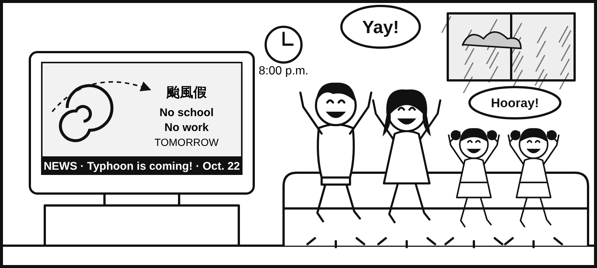
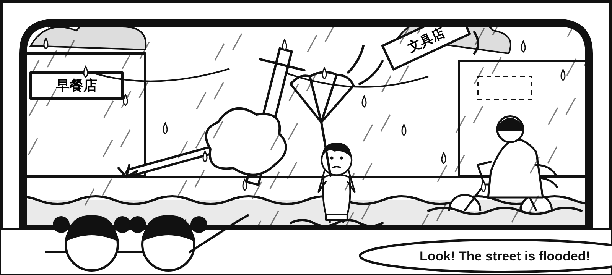
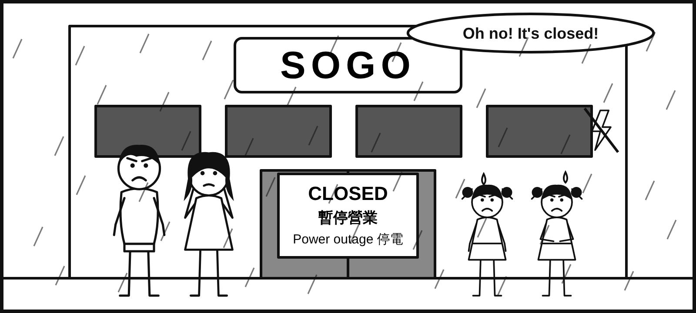

KCIS G5 Past Simple：Active and Passive Voices
Typhoon Day｜過去簡單式主動與被動語態｜附件故事情境＋文法練習
共 30 題｜逐題即時批改｜答錯可重填｜答對後整句朗讀與選做發音評分｜錯題 DOCX 下載
Typhoon Day 圖片情境



Typhoon Day｜過去簡單式主動與被動語態｜附件故事情境＋文法練習
共 30 題｜逐題即時批改｜答錯可重填｜答對後整句朗讀與選做發音評分｜錯題 DOCX 下載


